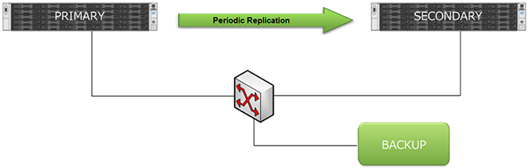

Hyper-V Replication and Workgroups
The following procedure is tested and verified on two servers running Windows Server 2012 R2.

There are two choices of replication. Kerberos (unencrypted replication on port 80 by default) is DOMAIN based, so since I want WORKGROUP based authentication I need to use HTTPS (encrypted on port 443). First, you need to get makecert.exe from here or from the latest Windows SDK
DJ-SERVER-W1 - ELEVATED CMD COMMANDS
makecert -pe -n "CN=DJ-SERVER-W1-RootCA" -ss root -sr LocalMachine -sky signature -r "DJ-SERVER-W1-RootCA.cer makecert -pe -n "CN=DJ-SERVER-W1" -ss my -sr LocalMachine -sky exchange -eku 1.3.6.1.5.5.7.3.1,1.3.6.1.5.5.7.3.2 -in "DJ-SERVER-W1-RootCA" -is root -ir LocalMachine -sp "Microsoft RSA SChannel Cryptographic Provider" -sy 12 "DJ-SERVER-W1.cer" reg add "HKLM\SOFTWARE\Microsoft\Windows NT\CurrentVersion\Virtualization\Replication" /v DisableCertRevocationCheck /d 1 /t REG_DWORD /f
DJ-SERVER-W2 - ELEVATED CMD COMMANDS:
makecert -pe -n CN=DJ-SERVER-W2-RootCA -ss root -sr LocalMachine -sky signature -r "DJ-SERVER-W2-RootCA.cer" makecert -pe -n "CN=DJ-SERVER-W2" -ss my -sr LocalMachine -sky exchange -eku 1.3.6.1.5.5.7.3.1,1.3.6.1.5.5.7.3.2 -in "DJ-SERVER-W2-RootCA" -is root -ir LocalMachine -sp "Microsoft RSA SChannel Cryptographic Provider" -sy 12 "DJ-SERVER-W2.cer" reg add "HKLM\SOFTWARE\Microsoft\Windows NT\CurrentVersion\Virtualization\Replication" /v DisableCertRevocationCheck /d 1 /t REG_DWORD /f
NOTES
- DJ-SERVER-W1 and 2 are my hostnames/lmhosts.
- The makecert.exe commands automatically imports the certificates into MMC.
- The added registry key(s) is needed to disable revocation checks that doesn't work on self-signed.
Now to register the certificates across the servers
Copy DJ-SERVER-W1-RootCA.cer to DJ-SERVER-W2 and from there run (elevated CMD):
certutil -addstore -f Root "DJ-SERVER-W1-RootCA.cer"
Copy DJ-SERVER-W2-RootCA.cer to DJ-SERVER-W1 and from there run (elevated CMD):
certutil -addstore -f Root "DJ-SERVER-W2-RootCA.cer"
Now you can choose the appropriate certificates in Hyper-V replication setup.
Remember to open both IN and OUT TCP 443 in the firewall on both servers.
NOTES
- The makecert.exe parameter /e can be added to specify enddate (mm/dd/yy). The default is year 2040.
- makecert.exe is really a development tool for testing certificates. These work well in a private network as we don't need a "proper" authority.
Performing a failover (server failure scenario)
Procedure for secondary replica server to take over VM:
- Right-click VM and choose failover on last replication timestamp.
- VM will now start up on secondary replica server.
Procedure for moving VM back to primary server:
- When the primary server is up and running again, stop/shut down VM on primary if it exists.
- Right-click and choose reverse replication on the secondary server back to primary.
- When done, turn off and right-click VM on secondary server and choose planned failover.
- Activate reverse replication and start up VM on the primary server.
NOTES
- It's important to follow the process above in regards to avoid data loss. It's important to let every step complete itself, as the replication steps may take some time to process.